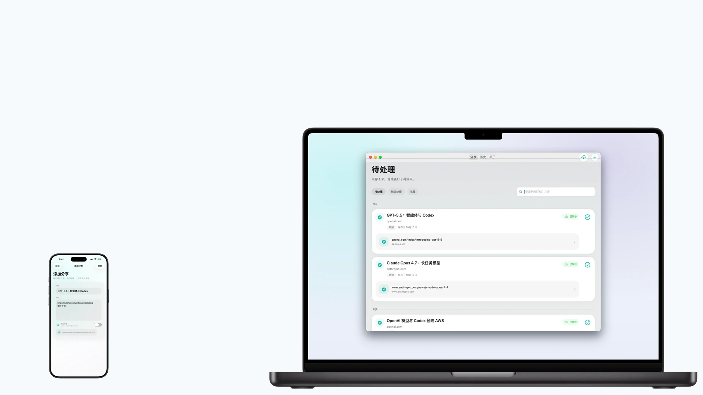
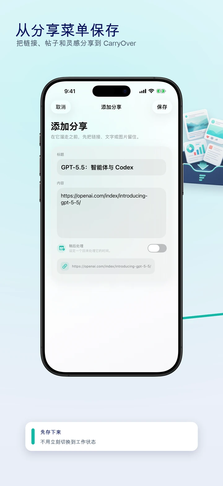
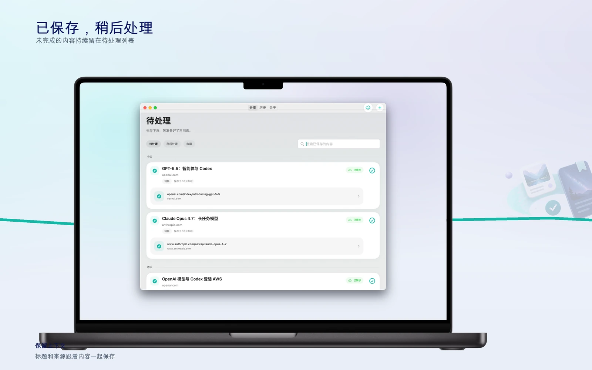

分享保存，也能手动记录
从支持系统分享的 App 保存可分享的文字、链接或图片，也可以在 CarryOver 中手动记录想法。

体验当前新功能，请从 App Store 获取 CarryOver。Mac 直接下载的 DMG 尚未更新到本次版本。

把链接、帖子和灵感分享到 CarryOver
未完成的内容持续留在待处理列表

打开来源，找到内容，一键完成
从支持系统分享的 App 保存可分享的文字、链接或图片，也可以在 CarryOver 中手动记录想法。
未完成的内容不会因为保存时间久而离开待处理列表。真正处理完，再标记完成。
在 Mac 主窗口按标题、文字和来源网址搜索，待处理列表和历史记录都能查找。
完成的内容进入历史记录。需要继续处理时，可以恢复到待处理列表。
设置日期和时间，并允许系统通知。点击提醒即可打开对应内容，继续处理。
通过 iCloud 在登录同一 Apple 账户的 iPhone、iPad 和 Mac 间同步。网络和 iCloud 状态可能影响同步速度。
免费版每天最多保存三次。一次性购买 Pro 可解除每日保存次数限制。当地价格以 App Store 为准。 阅读帮助